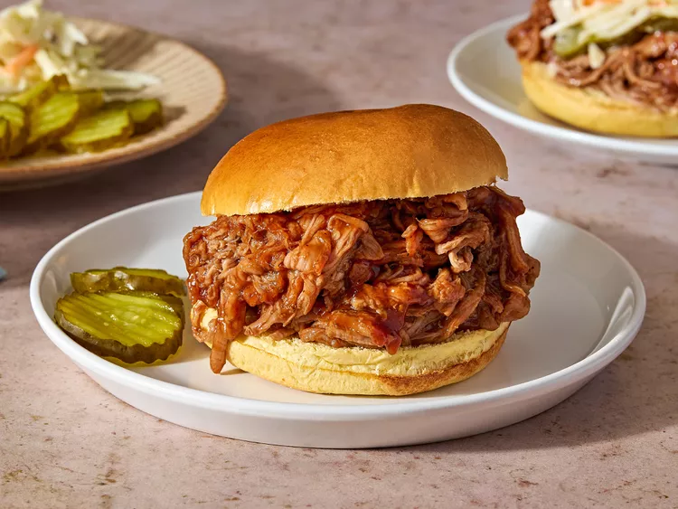

Home
Slow-cooker Pulled Pork

Description
Root beer and pull pork might not seem like a likely pairing
but here it makes all the difference. Topped with your favourite
BBQ sauce, it's sure to bring rave reviews.
Ingredients
- 1 (2 pound) pork tenderloin
- 1 (12 fluid ounce) can or bottle root beer
- 1 (18 ounce) bottle favourite barbecue sauce
- 8 hamburber buns, split and lightly toasted
Directions
- Gather all ingredients
- Place pork tenderloin in a slow cooker, pour root beer over top.
- Cover and cook on Low until pork shreds easily, 6 to 7 hours.
Note: the actual length of time may vary according to
the individual slow cooker.
- Drain well. Stir in barbecue sauce
- Save on hamburger buns.